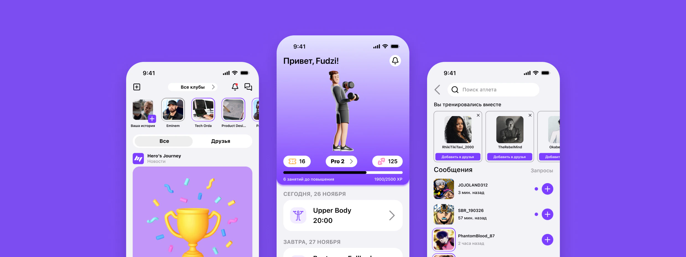
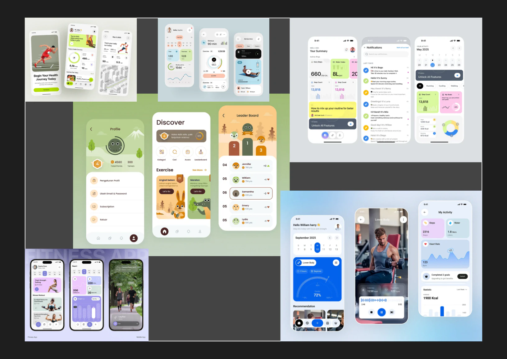
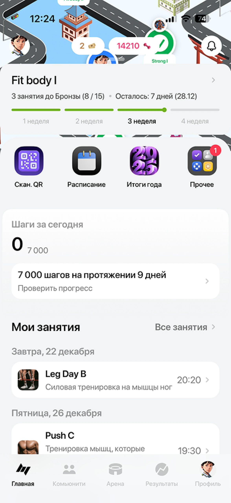
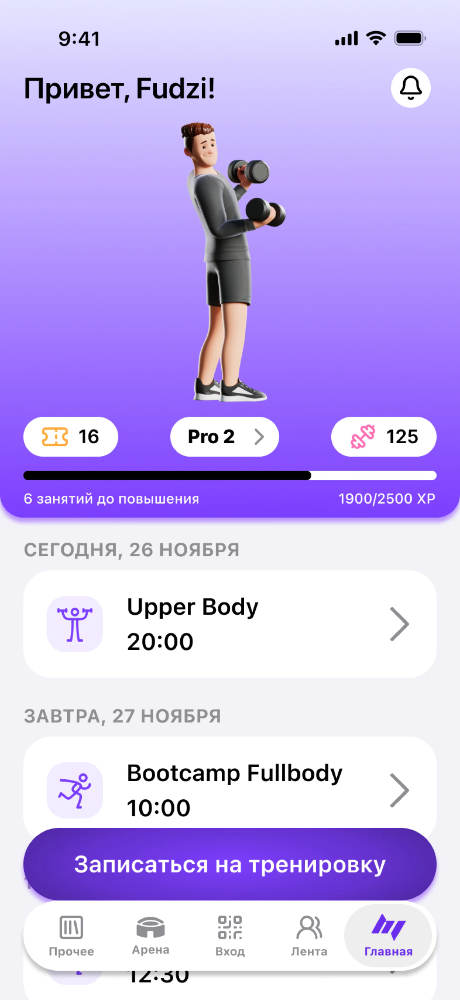
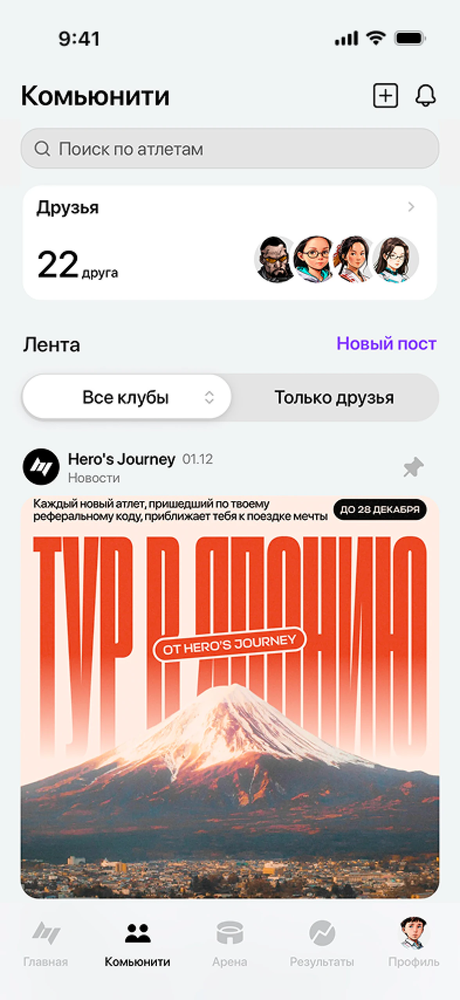
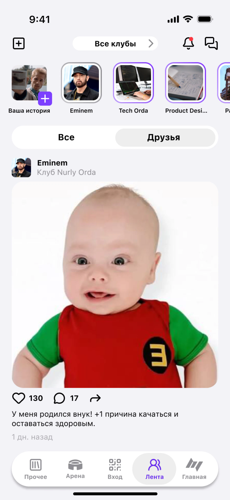
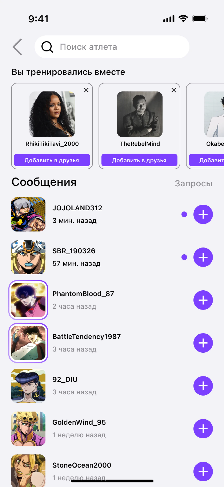
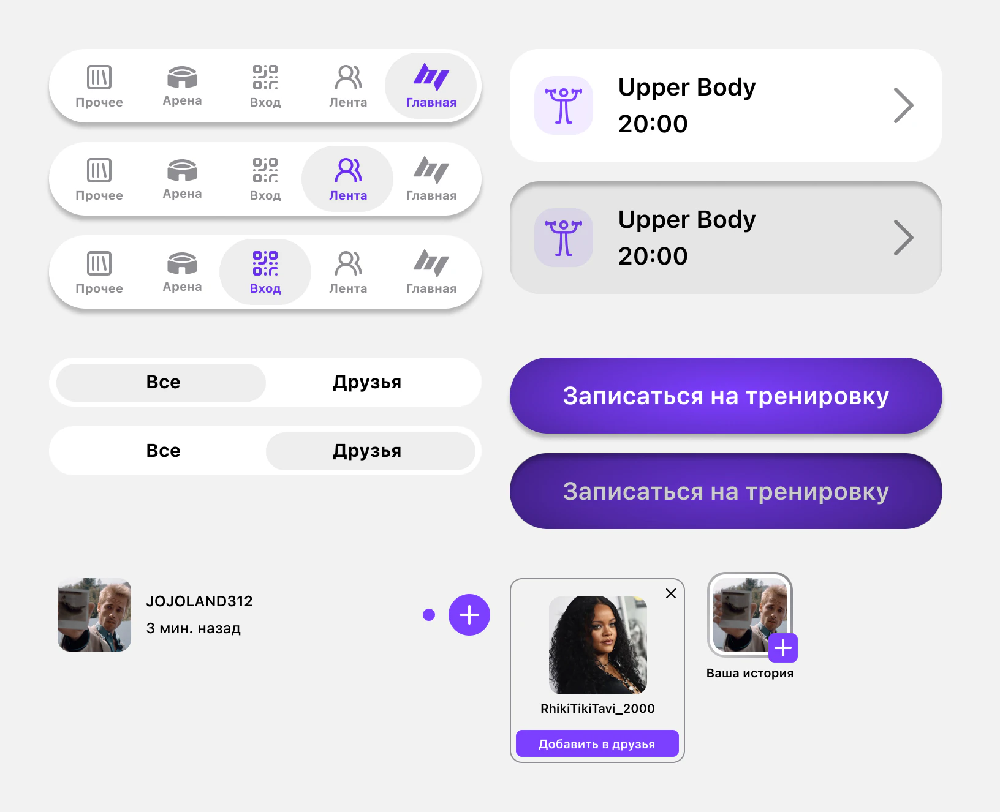
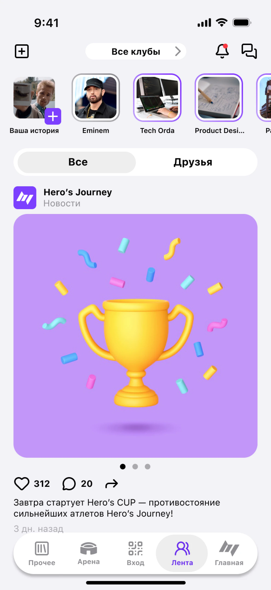
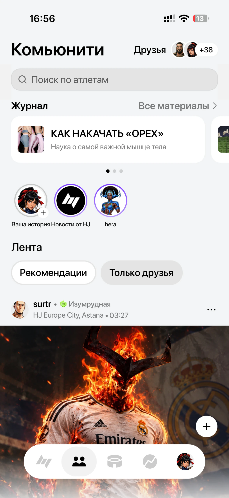

Hero’s Journey

Коротко о кейсе
Проблема
Вход по QR и запись теряются среди других кнопок, прогресс персонажа не виден, а общаться можно только в комментариях, поэтому атлеты уходят в Telegram и WhatsApp.
Решение
Персонаж и прогресс — в центре главной, одна кнопка записи, вход по QR — в нижней панели, личные сообщения и истории в ленте.
Результат
Редизайн главной и ленты и новый раздел «Сообщения». Позже истории в ленте и плавающая нижняя панель появились в самом приложении.
О проекте
Hero’s Journey — сеть фитнес-клубов с геймификацией. Приложение — единственный ключ к клубу: через него проходят в зал по QR, записываются на тренировки и следят за прогрессом. Каждый атлет здесь — персонаж RPG: за тренировки он получает очки опыта и повышает уровень.
Я тренируюсь в этом клубе и пользуюсь приложением больше года. Это мой концепт-редизайн, клуб его не заказывал. Я переделал главный экран и ленту и добавил личные сообщения. Для этого поговорил с атлетами, разобрал конкурентов и собрал мудборд.
Исследование
Начал с собственного опыта. Приложение — единственный способ пройти в зал, поэтому я открываю его перед каждой тренировкой, а их у меня больше 180. Главный экран похож на кабину самолёта: QR и запись спрятаны среди мелких кнопок, а интерфейс выглядит устаревшим.
Потом опросил пятерых атлетов в зале, от новичков до профи. Чаще всего говорили о двух вещах:
- Сложно найти нужное. «Временами найти нужную инфу — анрил. Если к записи уже как-то приучился, то найти что-то другое — сложновато».
- Негде поговорить лично. «В приложении есть лента, но писать там комментарии у всех на виду — это как кричать на весь зал. Было бы как директ в инсте, я бы только там и сидел».
Конкуренты
Я посмотрел, как похожие задачи решают Nike Training Club, Strava и Instagram.
Nike Training Club
- Что у них
- Одна главная кнопка «Начать тренировку», информация выдаётся порциями
- Что я взял
- Одну крупную кнопку «Записаться на тренировку» вместо четырёх
Strava
- Что у них
- Свой прогресс и успехи друзей видны сразу, это мотивирует заходить каждый день
- Что я взял
- Уровень, статус и опыт на главном экране
- Что у них
- Директ и сторис превращают сервис в привычку
- Что я взял
- Личные сообщения и истории в ленте
Мудборд
Перед редизайном я собрал мудборд из фитнес-приложений, чтобы найти визуальное направление.

Проблемы
Я свёл боли атлетов и бизнеса в четыре проблемы.
Важное не под рукой
- Атлетам
- Вход по QR и запись выглядят как обычные кнопки в ряду с неважными разделами. Новичкам интерфейс кажется запутанным
- Бизнесу
- Запись и посещения — основа выручки. Чем сложнее путь, тем выше риск, что человек не дойдёт до тренировки
Геймификацию не видно
- Атлетам
- Уровень и опыт видно, только если зайти в профиль
- Бизнесу
- Прокачка персонажа должна удерживать клиентов. Без неё клуб становится обычным залом
На главной всё сразу
- Атлетам
- Новости, баннеры и разделы идут одним пластом, сложно сосредоточиться на своей задаче
- Бизнесу
- Запутавшийся человек открывает приложение реже
Нет личного общения
- Атлетам
- Договориться о тренировке можно только в комментариях, поэтому все уходят в Telegram и WhatsApp
- Бизнесу
- Комьюнити живёт в чужих мессенджерах, а не в приложении клуба
Главный экран
В старой версии верх экрана занимают четыре кнопки: «Скан. QR», «Расписание», «Итоги года» и «Прочее». Персонажа на главной нет. Я сделал его центром экрана, чтобы атлет сразу видел, кого прокачивает.
- Персонаж. Вместо шапки с кнопками — аватар атлета.
- Прогресс. Уровень, статус Pro 2 и очки опыта стали крупными. Полоса прогресса показывает, сколько занятий осталось до повышения.
- Одна главная кнопка. Четыре кнопки сверху я убрал. Вместо них — крупная кнопка «Записаться на тренировку»: это главное действие и для атлета, и для клуба.
- Вход по QR в навигации. Кнопка «Вход» переехала в центр нижней панели. Панель есть на всех основных экранах, поэтому пройти в клуб можно из любого раздела.


Лента
Старая лента похожа на доску объявлений: посты атлетов и новости клубов есть, но общаться можно только в комментариях. Повода открыть приложение в день без тренировки нет. Я хотел, чтобы приложение открывали каждый день, а не только перед залом.
- Истории. Клуб быстро делится новостями, атлеты выкладывают короткие моменты из тренировок. Основная лента при этом не перегружается.
- Меньше лишнего. Часть элементов я перенёс в разделы, где они нужнее, и освободил место под посты.
- Сообщения. Иконка в шапке ведёт в новый раздел с личными чатами.


Сообщения
Раньше договориться о совместной тренировке можно было только в комментариях у всех на виду или в Telegram. Я добавил личные чаты внутри приложения.

Вы тренировались вместе
Чтобы не начинать с пустого списка, приложение подсказывает людей, с которыми атлет был на одних занятиях. Их можно сразу добавить в друзья.
Зачем это клубу
Общение остаётся в приложении клуба и не уходит в сторонние мессенджеры.
Компоненты
Экраны собраны из компонентов с вариантами и свойствами: нижняя панель, карточки тренировок, кнопки, переключатели, строка чата, рекомендация и история.

Итог
Это концепт: в разработку он не попал, и на пользователях я его не проверял. Вот что, по моей задумке, он меняет.
Для атлетов
Прогресс на виду
Персонаж и уровень встречают атлета при каждом входе в приложение.
Запись и вход в одно касание
Кнопка записи — на главной, вход по QR — в нижней панели на любом экране.
Общение внутри
Личные сообщения и истории без перехода во внешние мессенджеры.
Для клуба
Больше записей
Крупная кнопка и понятная цель до повышения подталкивают ходить чаще.
Удержание
Истории и сообщения дают повод открывать приложение каждый день.
Комьюнити в продукте
Атлеты общаются в приложении клуба, а не в сторонних чатах.
Приложение сейчас
Позже в самом приложении появились истории в ленте и плавающая нижняя панель, как в моём редизайне. Главная при этом осталась прежней: ряд кнопок наверху, а персонаж — в профиле. Мой редизайн сделан раньше: в истории версий Figma он датирован 27–28 декабря 2025 года, скриншоты приложения — октябрь 2026.


Метрики
Данных клуба у меня нет, поэтому это не результаты, а метрики, по которым я бы проверял редизайн:
Что я понял
Интерфейс становится удобнее не от новых элементов, а когда убираешь лишнее. На главной я убрал четыре кнопки сверху, и запись с прогрессом стали заметны.